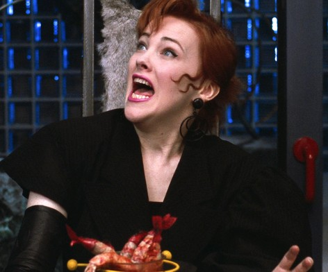
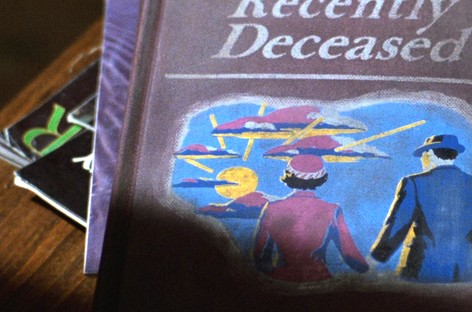
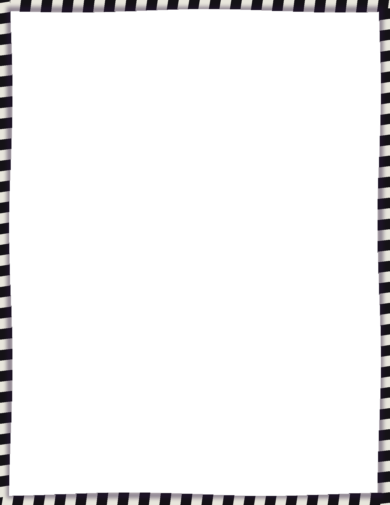

This evening
THEMENU
TOBEGIN
Shrimp cocktail
Chilled shrimp, iceberg, lemony horseradish sauce.
Served lively. Keep your face clear of the bowl.
Otho’s spiral breadsticks
Black and white sesame twists, baked crisp.
Model town cheeses
Cheese houses, cherry tomato and cornichon trees.
THEMAINEVENT
Grilled lobster tails
Garlic and parsley butter, shoestring fries, salad.
AFTERWARDS
Black and white cake
Vanilla and chocolate sponge, white ganache.
Delia’s meringue sculpture
Meringue spires, whipped cream, blackberry swirl.
Please do touch this one.
TODRINK
Banana daiquiri
Banana, lime, sugar syrup and ice. No rum.
May cause sudden dancing. Resist.
Sparkling lemonade
Pressed lemons, cane sugar, soda water.

The shrimp cocktail. It grabs back.

Found in the attic. Reads like stereo instructions.
House rule
Donotsaythehost’snamethreetimes.
Menu by Delia. Table by Otho. Winter River, Connecticut, 1988.

